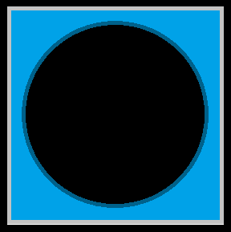
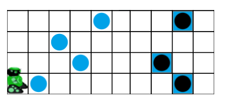
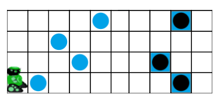
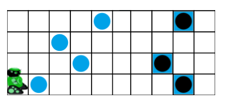

Murmeln verschieben
 
 

Programmiere den Roboter:
Der Roboter soll jede Murmel aufheben und in einem Loch ablegen.
Der Roboter kann höchstens eine Murmel auf einmal tragen.
Verwende den Baustein wiederhole.
Verwende den Baustein falls, um zu testen ob auf dem aktuellen Feld eine Murmel liegt oder ob sich auf dem aktuellen Feld ein Loch befindet.
Verwende Baustein wiederhole ineinander verschachtelt.
Verwende den Baustein falls, um zu testen ob auf dem aktuellen Feld eine Murmel liegt oder ob sich auf dem aktuellen Feld ein Loch befindet.
Der Roboter darf nicht versuchen, eine Murmel abzulegen, wenn er gar keine Murmel transportiert. Der Roboter hat keine Sensoren um zu prüfen, ob er eine Murmel transportiert. Er hat auch kein Gedächtnis, mit dem er sich merken könnte, ob er bereits eine Murmel aufgehoben hat. Du musst dir also etwas anderes überlegen.